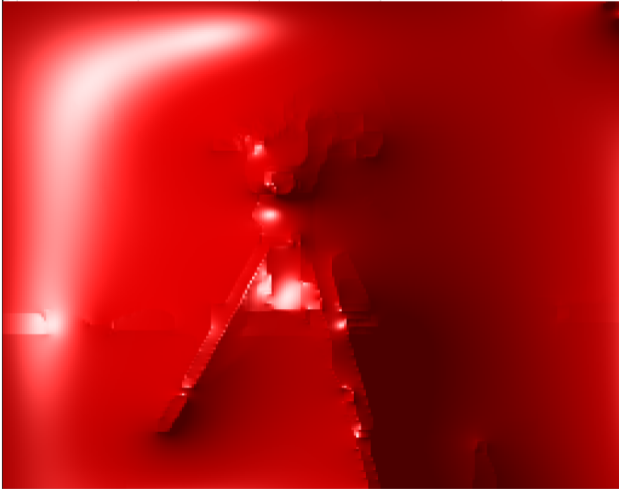

Subspace Correction Methods for Total Variation Minimization
Fig.: Overlapping domain decomposition for TV-inpainting with
4 subdomains. The interfaces of the subdomains are marked in red and blue. The inpainting
(damaged) region is the black heart in the picture. The overlapping domain decomposition
algorithm computes a solution in each subdomain in every iteration and glues them together
till the inpainting region is reconstructed.
Due to the constant improvement of hardware, the dimension of measured data generally increases. Typical examples in image processing where such large scale data appears are 4D imaging (spatial plus temporal dimensions) from
functional magnetic-resonance in nuclear medical imaging, astronomical imaging and global terrestrial seismic tomography. In these applications the large amounts of data usually needs to be processed further in order to obtain the necessary or usable information. These large problems to be dealt with need to be solved in a reasonable time. This requires effective numerical methods and massively parallel solvers. One of the most successful methods to design efficient numerical solvers for large problems are subspace correction methods. Subspace correction methods are a divide-and-conquer technique originally introduced to numerically solve partial differential equations. These allow to split the computational workload and solve a sequence of smaller problems with the possibility of parallelization.
We develop convergent subspace correction methods for non-smooth and non-additive optimization problems, in particular for total variation minimization, and analyze their properties and behaviour.
Related publications:
S. Hilb and A. Langer, A General Decomposition Method for a Convex Problem Related to Total Variation Minimization, submitted, 2022, 34 pp. [pdf][software]
A. Langer, Domain Decomposition for Non-smooth (in Particular TV) Minimization. In: Chen K., Schönlieb CB., Tai XC., Younces L. (eds) Handbook of Mathematical Models and Algorithms in Computer Vision and Imaging. Springer, Cham, 2021. https://doi.org/10.1007/978-3-030-03009-4_104-1 [pdf]
A. Langer and F. Gaspoz, Overlapping domain decomposition methods for total variation denoising, SIAM Journal on Numerical Analysis, Vol. 57, No. 3, 2019, 1411-1444 [pdf][link]
M. Hintermüller and A. Langer, Non-overlapping domain
decomposition methods for dual total variation based image denoising
, J. Scientific Computing, Vol 62, No. 2, 2015 pp. 456-481.
[pdf]
M. Hintermüller and A. Langer, Surrogate functional based
subspace correction methods for image processing, In Domain Decomposition Methods in Science and Engineering XXI, pages 829–837. Springer, 2014.[pdf]
M. Hintermüller and A. Langer, Subspace correction methods
for a class of non-smooth and non-additive convex variational problems
with mixed L1/L2 data-fidelity in image processing,
SIAM J. Imaging Sciences, Vol 6, No 4, 2013, pp. 2134-2173
[pdf]
A. Langer, S. Osher, and C.-B. Schönlieb, Bregmanized domain
decomposition for image restoration, J. Scientific Computing, Vol 54, 2013, pp. 549-576
[pdf]
M. Fornasier, Y. Kim, A. Langer, and C.-B. Schönlieb, Wavelet decomposition method for
L2/TV-image deblurring, SIAM J. Imaging Sciences, Vol 5, No 3, 2012, pp. 857-885
[pdf]
M. Fornasier, A. Langer, and C.-B. Schönlieb, A
convergent overlapping domain decomposition method for total
variation minimization, Numer. Math., Vol 116, No 4, 2010, pp. 645-685
[pdf][software]
M. Fornasier, A. Langer, and C.-B. Schönlieb,
Domain decomposition methods for compressed sensing ,
Proc. Int. Conf. SampTA09, Marseilles, 2009. [pdf] or arXiv:0902.0124v1
[math.NA]
Discretization Methods for Non-smooth Optimisation
Fig.: Adaptive discretization of an image via finite elements.
Discretization methods for non-smooth optimization problems, such as total variation (TV) minimization, are essential for accurately recovering sharp features and discontinuities in imaging and inverse problems. Due to the inherent non-differentiability of TV regularization, careful numerical treatment is required to ensure stability and convergence. In this context, we develop and study a range of discretization strategies, including finite element methods (FEM), adaptive FEM, adaptive finite difference methods (FDM), and neural network-based discretizations. These approaches aim to combine accuracy with computational efficiency across diverse applications.
Related publications:
M. Alkämper, S. Hilb, and A. Langer, A primal-dual adaptive finite element method for total variation minimization, Advances in Computational Mathematics, Vol. 51, No. 42, 2025. [link][software]
T. Jacumin and A. Langer, An adaptive finite difference method for total variation minimization, Numerical Algorithms (2025) [link][software]
A. Langer and S. Behnamian, DeepTV: A neural network approach for total variation minimization, arXiv preprint ArXiv:2409.05569, 2024. [link][software]
S. Hilb, A. Langer, and M. Alkämper, A primal-dual finite element method for scalar and vectorial total variation minimization, Journal of Scientific Computing, Vol. 96, No. 24, 2023. [pdf][link][software]
M. Alkämper and A. Langer, Using DUNE-ACFem for non-smooth minimization of bounded variation functions, Archive of Numerical Software, Vol. 5, No. 1, 2017, pp. 3-19 [pdf]
Parameter Selection
In several application, for example in image processing, one solves a minimization problem of the type
min H(u) + αR(u),

Fig.: Locally adaptive α.
where H represents a data fidelity term, which enforces the consistency between the recovered and measured data, R is an appropriate regularization term, which prevents over-fitting, and α>0 is a regularization parameter weighting the importance of the two terms. The solution of this problem clearly depends on the choice of the parameter. In particular, in image reconstruction, large α, which lead to an over-smoothed reconstruction, not only remove noise but also eliminate details in images. On the other hand, small α lead to solutions, which fit the given data properly but therefore retain noise in homogeneous regions. Hence a good reconstruction can be obtained by choosing α such that a good compromise of the aforementioned effects are made.
A scalar regularization parameter might not be the best choice for every application. For example, images usually have large homogeneous regions as well as parts with a lot of details. This motivates that α should be small in parts with small features, in order to preserve the details, and should be large in homogeneous parts to remove noise considerable. With such a choice of a spatially varying weight we expect better reconstructions than with a globally constant parameter.
Related publications:
A. Langer, Locally adaptive total variation for removing mixed Gaussian-impulse noise, International Journal of Computer Mathematics, Vol. 96, No. 2, 2019, 298-316 [link]
A. Langer, Investigating the influence of box-constraints on the solution of a total variation model via an efficient primal-dual method, J. Imaging, Vol. 4, No. 1, 2018, 12 (34 pp.) [link]
M. Hintermüller, A. Langer, C. N. Rautenberg, and T. Wu, Adaptive regularization for image reconstruction from subsampled data,In Proceedings of the International Conference on Imaging, Vision and Learning Based Optimization and PDEs. ILVOPDE 2016. Pages 3–26, Springer, 2018 [pdf]
M. Hintermüller, C. N. Rautenberg, T. Wu, and A. Langer, Optimal Selection of the Regularization Function in a Generalized Total Variation Model. Part II: Algorithm, its Analysis and Numerical Tests, Journal of Mathematical Imaging and Vision, 2017, pp. 1-19
[link]
A. Langer, Automated parameter selection in the L1-L2-TV model for removing Gaussian plus impulse noise, Inverse Problems, Vol. 33, No. 7, 2017, 074002 (41 pp.) [pdf][link]
A. Langer, Automated parameter selection for total variation minimization in image restoration, Journal of Mathematical Imaging and Vision, Vol. 57, No.2, 2017, pp. 239–268 [pdf][link]
Mixed Noise Removal
Usually images are corrupted by different types of noise, such as Gaussian noise, Poisson noise, and impulse noise. This contamination usually happens during image acquisition, which describes the process of capturing an image by a camera and converting it into a measurable entity, and image transmission.
For the application of removing simultaneously Gaussian and impulse noise we proposed to minimize a functional consisting of a combined L1 and L2 data fidelity term and a total variation term. This new model, called L1-L2-TV model, has noticable advantages over popular models.
Related publications:
A. Langer, Locally adaptive total variation for removing mixed Gaussian-impulse noise, International Journal of Computer Mathematics, Vol. 96, No. 2, 2019, 298-316 [link]
A. Langer, Automated parameter selection in the L1-L2-TV model for removing Gaussian plus impulse noise, Inverse Problems, Vol. 33, No. 7, 2017, 074002 (41 pp.) [pdf][link]
M. Hintermüller and A. Langer, Subspace correction methods
for a class of non-smooth and non-additive convex variational problems
with mixed L1/L2 data-fidelity in image processing,
SIAM J. Imaging Sciences, Vol 6, No 4, 2013, pp. 2134-2173
[pdf]